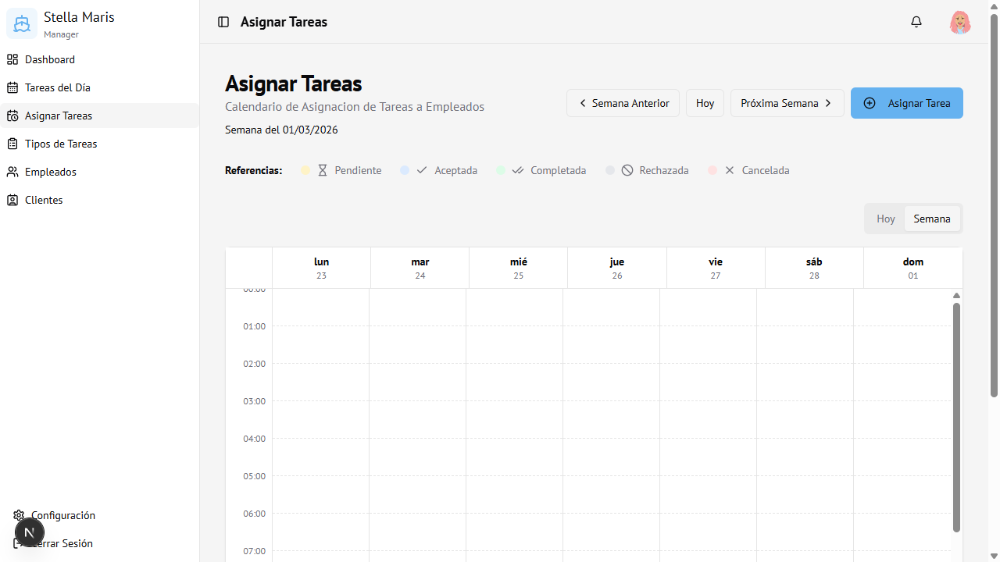

Módulo 07
Asignar Tareas
Calendario semanal y diario para asignar y visualizar tareas a los empleados.
Vista general

Modos de vista
| Vista | Descripción |
|---|---|
| Semana | Muestra 7 días en columnas, con las tareas como bloques de tiempo |
| Hoy | Vista del día actual con mayor detalle de horarios |
Para cambiar entre vistas: botones Hoy / Semana en la esquina superior derecha del calendario.
Navegar entre semanas
- ← Semana Anterior — retrocede una semana
- Hoy — vuelve a la semana actual
- Próxima Semana → — avanza una semana
Referencias de colores (estados)
Pendiente
Aceptada
Completada
Rechazada
Cancelada
| Color | Estado |
|---|---|
| Amarillo | Pendiente |
| Azul | Aceptada |
| Verde | Completada |
| Gris | Rechazada |
| Rojo | Cancelada |
Crear una nueva asignación
- Hacer clic en Asignar Tarea (arriba a la derecha)
- Se abre el formulario de asignación
Campos del formulario
| Campo | Obligatorio | Descripción |
|---|---|---|
| Tipo de Tarea | Sí | Seleccionar de la lista de tipos creados |
| Fecha | Sí | Día en que se realizará |
| Hora de inicio | Sí | Hora de comienzo |
| Hora de fin | Sí | Hora de finalización (se sugiere según duración del tipo) |
| Empleado/s | No | Uno o varios empleados asignados |
| Estado | Sí | Estado inicial (por defecto: Pendiente) |
| Cliente | No | Cliente al que pertenece la tarea |
| Embarcación | No | Lancha específica del cliente |
| Extras | No | Ítems adicionales definidos en el tipo de tarea |
| Observaciones | No | Notas libres para el empleado |
Detección de conflictos: Si el empleado seleccionado ya tiene otra tarea en ese horario, el sistema muestra una advertencia antes de guardar.
- Hacer clic en Guardar o Guardar de todas formas si hay conflicto aceptado
Editar una asignación existente
- Hacer clic sobre el bloque de tarea en el calendario
- Se muestra el detalle de la asignación
- Hacer clic en Editar para modificar los datos
- Guardar los cambios
Eliminar una asignación
- Hacer clic sobre el bloque de tarea
- En el detalle, hacer clic en Eliminar
- Confirmar la acción
Acceso
Solo visible para Administrador.
Ruta:
Ruta:
/schedule